| 日付 | 2026年5月3日（日） - 2026年5月6日（水） | ||||
|---|---|---|---|---|---|
| 山域 | 飛騨の山 | ||||
| メンバー | 家族（妻） | ||||
| 山行形態 | 3泊4日キャンプ | ||||
| アクセス | 車 | ||||
| ルート (Map1) |
|
3日目
本日は小秀山登山。3日目にしてようやくの快晴予報だ。
駐車場に車を停める。標高880m。キャパが少なくほぼ満車。
駐車料金は500円だ。
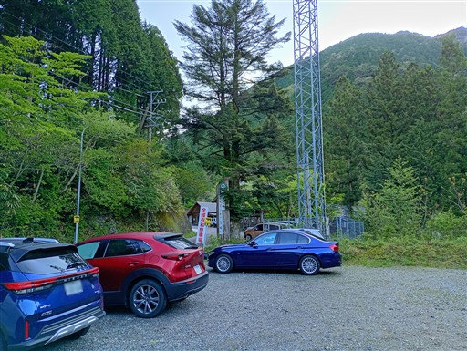
橋を渡って登山開始。
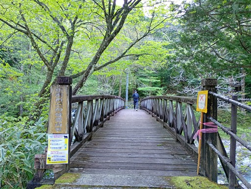
橋からは美しい渓谷が眺められる。豪雨から一日経ってだいぶ水量は落ち着いただろうか？
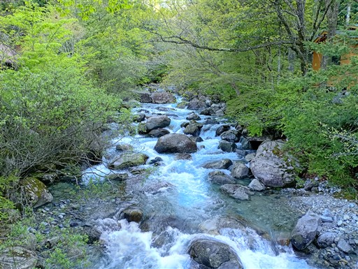
乙女渕。美しい渓谷沿いの道だ。
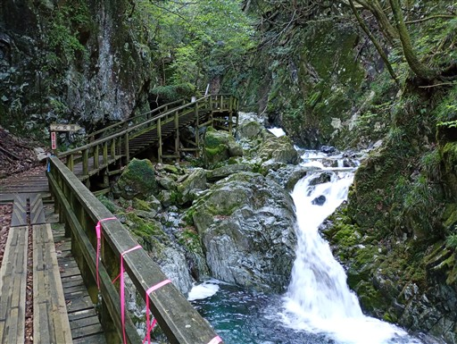
登山道の整備は完璧。登山者だけでなく、この辺りは観光客も来そうだ。
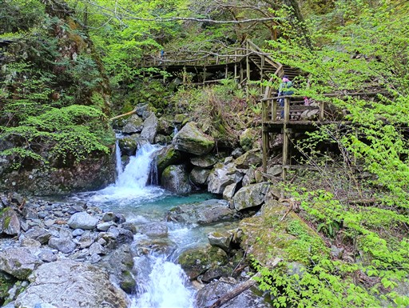
ねじれ滝。途中でねじれているが、樹木でよく見えない。
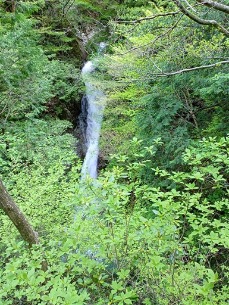
シャクナゲ。
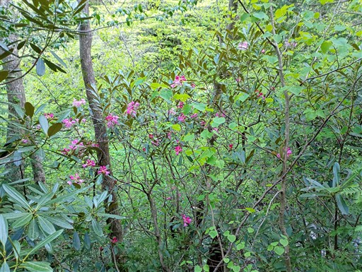
和合の滝。形の美しい滝だ。
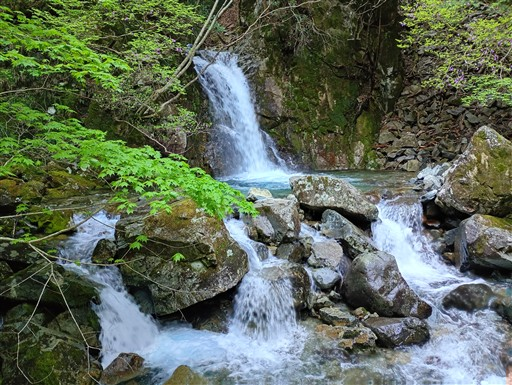
この辺りで木道は終わって登山道になる。
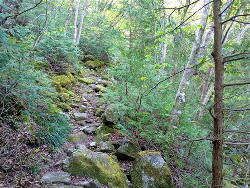
天狗岩。どの辺りが天狗なのだろう？
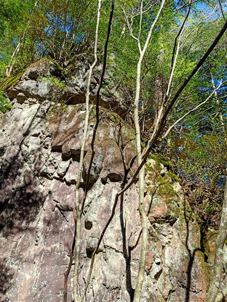
展望台の標識があったので寄り道してみる。
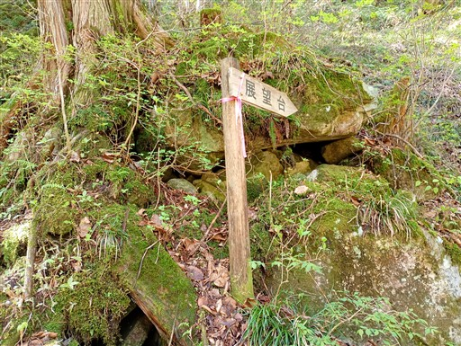
少し歩いて展望台に到着。
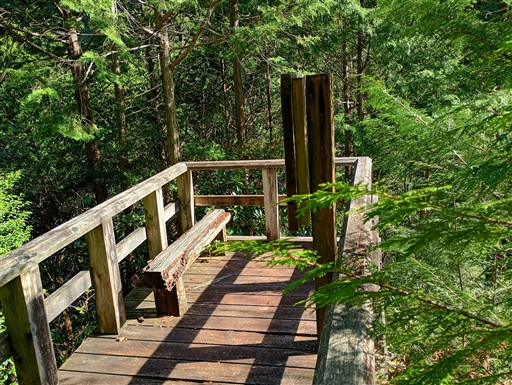
しかしどこにも展望は広がらない。
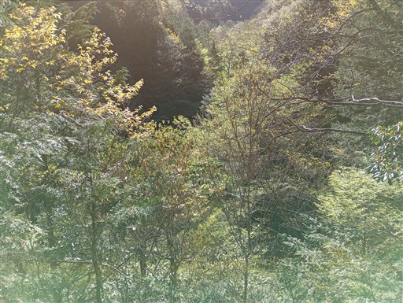
側の案内板によると夫婦滝が見えるのか？
でも樹木が生長したからか、残念ながらよく見えない。
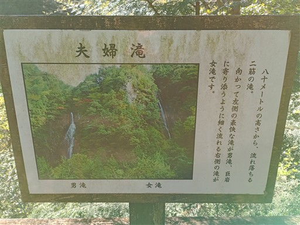
気を取り直して先に進む。道は再び木道だ。
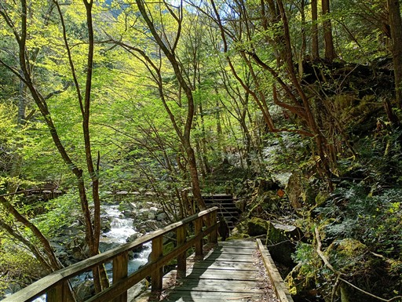
石の上に乗っかっている木。木が枯れたら石ごと落ちてきそうだ。
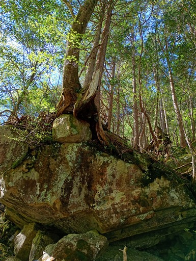
崩落地の跡。大量の石が積み重なっている。
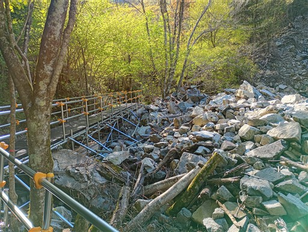
木段が折れている。かなり古そうなのでちょっと怖い。
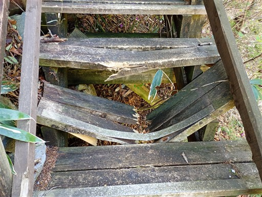
夫婦滝の男滝に到着。落差80m、とても美しい滝だ。
もっと有名になっても良いくらい素晴らしい滝だと思う。
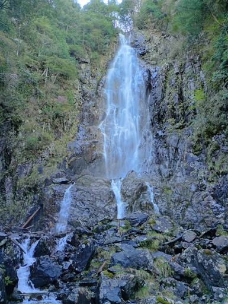
斜面を登ると滝の落ち口に出てくる。もう少し覗きこみたいがちょっと無理。
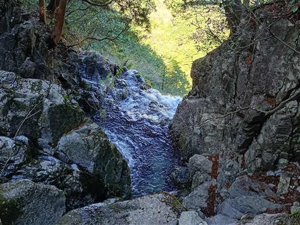
渡渉ポイント。
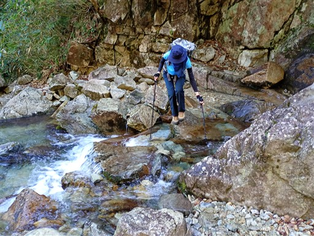
第二渡渉ポイント。
まあまあの難易度。普段より水量が多いのだろうか？
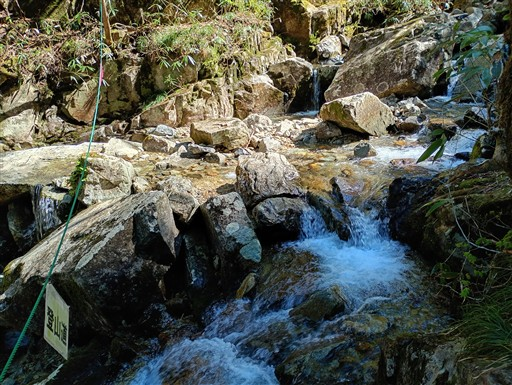
その先に再び小さな滝。水しぶきが光を浴びて光っている。
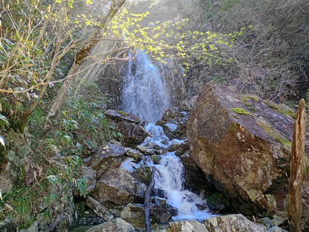
周囲にはアカヤシオがチラホラ。
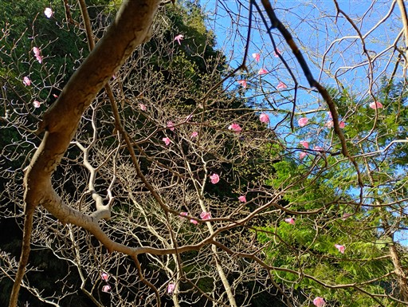
登山道に現れる岩塔。名前は付いていないのだろうか？
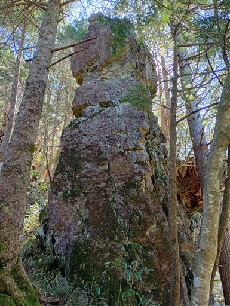
続いて現れる大きな岩。
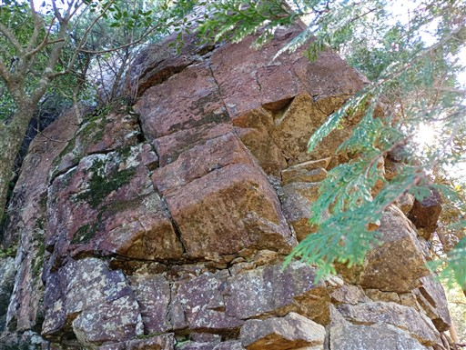
こちらは鎧岩という名前が付いている。
「一周お回りください」と書かれている。
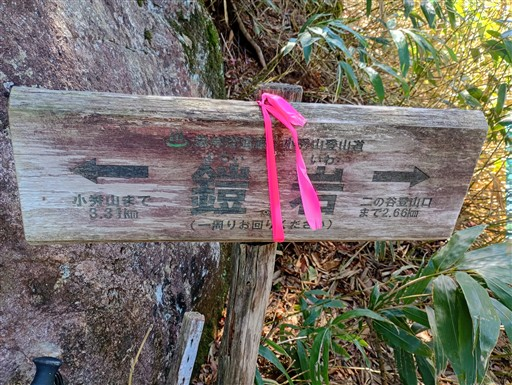
ザックを置いて一周。結構荒れた道。
一周回ったから何という訳でもないのだけれど、
こういうアトラクションは全てやっていく主義。
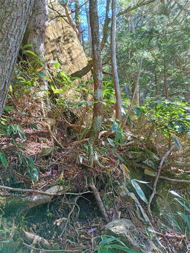
第一展望台に到着。
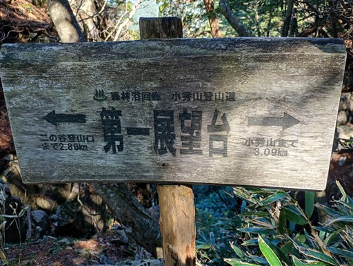
でも全く展望は広がらず。その先の第二展望台も全く同様。
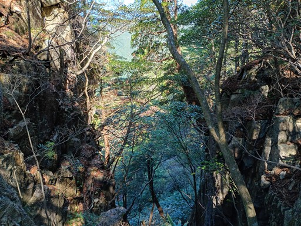
樹林帯が広がる尾根道になってきた。
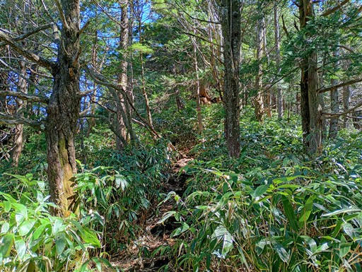
カモシカ渡り。木の根が絡まる急登。
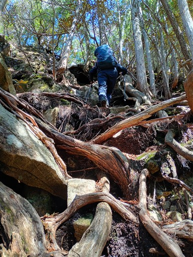
その次は木の根が絡まる岩場。
歩いていてとても楽しい登山道だ。
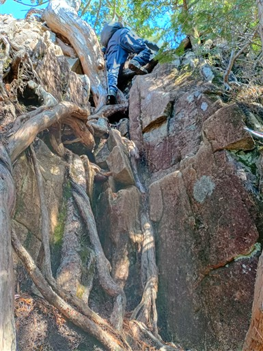
岩場を上がったところにある岩尾根。
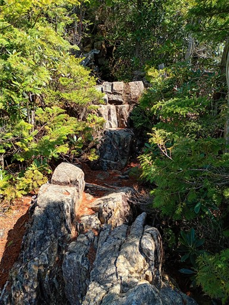
ここにきて急に展望が広がる。
知らない山々ばかりだが、大展望だ。
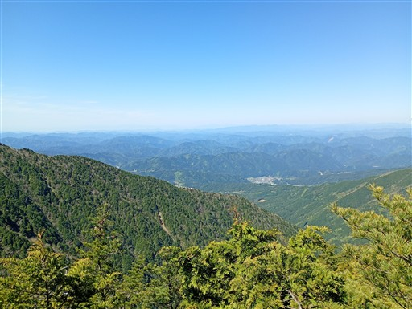
遠くの方にビルが見えるが、名古屋の方だろうか？
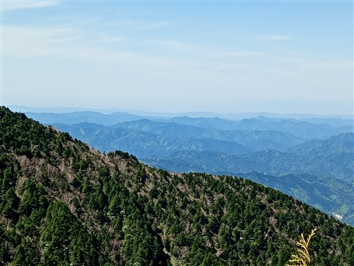
針葉樹と笹原広がる尾根道。良い雰囲気だ。
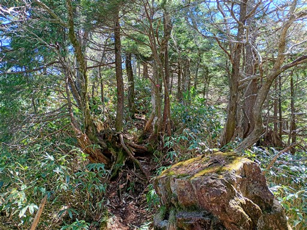
標高を上げると霜柱が見られる。
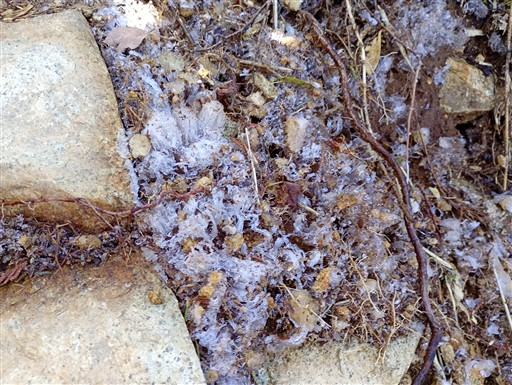
御嶽山がチラッと見えてきた。
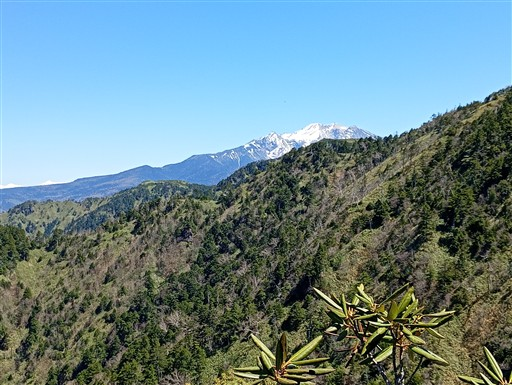
その左には北アルプスの山々。右が笠ヶ岳だ。
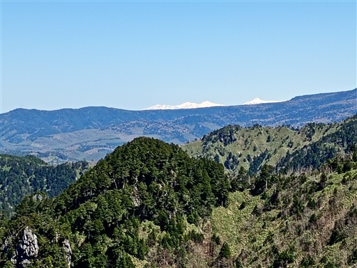
兜岩に到着。
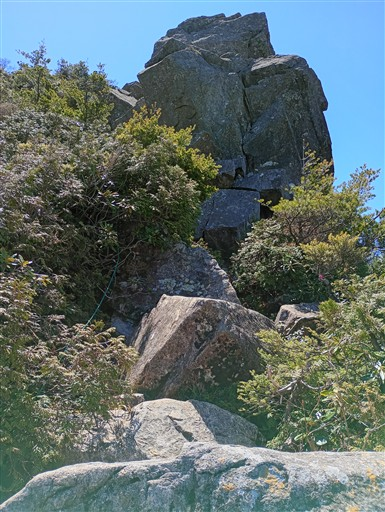
兜岩の天辺に登ってみる。最高の展望。
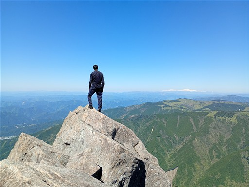
左奥に見えるのは白山、手前の尾根は明日登る予定の白草山辺りだろうか。
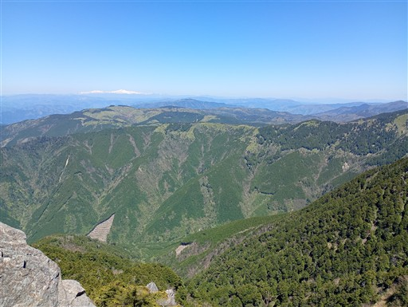
ショウジョウバカマ。
あまり好きな花ではないが、すごくたくさん咲いているため撮影。
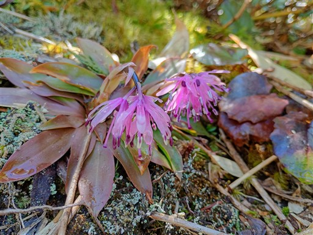
尾根の反対側の景色も広がってくる。こちらは谷が深い。
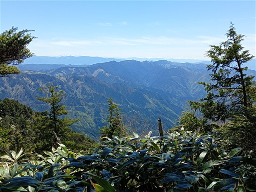
バイカオウレンの花もあちらこちらに咲いている。
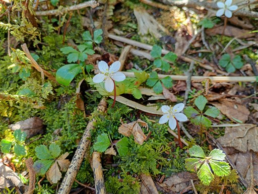
傾斜が緩んで楽な尾根道になる。
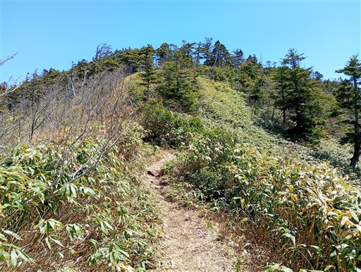
遠くに見えているのは恵那山。こちらから見ても存在感がある。
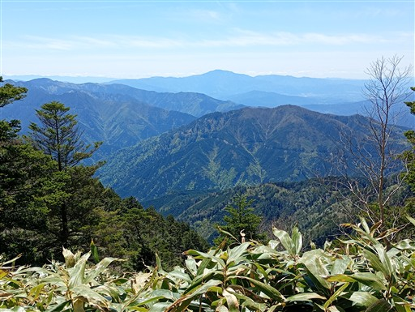
緩やかなのは良いけれど、道がかなりぬかるんでいる。
これがずっと続き、かなり歩きにくい。
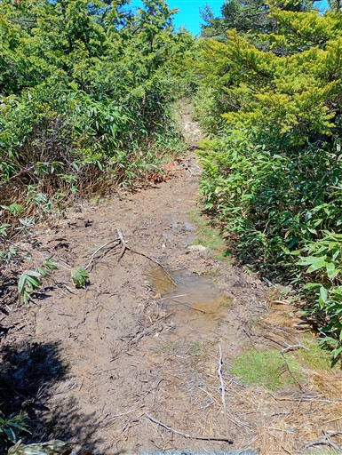
第三高原。一、二とあって三つ目だが、何を現しているのか不明。展望スポット？
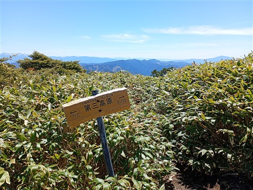
山頂が見えてきた。あともう少し。
本日見た最初で最後の雪。
最近買ったチェーンスパイクと、六本爪軽アイゼンの試し履きをして見たかったのだが、
残念ながら使えるポイントがなかった。
山頂直下の避難小屋。かなり立派な小屋だ。
そして小秀山山頂に到着。標高1982m。
大展望の山頂。目の前に御嶽山が聳えている。
中央アルプスの山々が一直線。いつか歩いてみたい稜線だ。
遠くに白山。こちらは真っ白。
大展望の山頂を満喫し、ゆっくり昼食をとったら下山開始。
中央アルプスの向こう側に、南アルプスの頭が見えている。
悪沢岳、赤石岳、聖岳だ。
分岐点に到着。左の道から来て、下山は右の道だ。
目の前に見える岩峰は函ヶ岳というらしい。登山道は無い山だ。
ちょっと崩壊しかかっている木橋。
休憩適地。クマよけのため、フライパンをたたいて音を鳴らせるようになっている。
あとは延々、ジグザグの植林地帯の下り。
登りの道と比較すると実につまらない道だ。
途中から、折り返し地点にNo.が振られるようになる。いろは坂みたいだ。
整然と並ぶ植林地帯。杉ではなく檜だ。
檜の実がたくさん落ちている。
最後は0番目。
山の神。小さな祠だ。
林道に出てくる。
ここからは2kmの林道歩き。
ゲートが現れる。一般車は入れないようだ。
乙女渓谷キャンプ場に到着。テントサイトはなくバンガローのみのキャンプ場だ。
駐車場に戻ってくる。
小秀山は前々から登りたいと思っていた山で、期待を裏切らない素晴らしい山だった。
変化に富んだ登山道、山頂からの雄大な景色、程よい難易度、混雑しない、
とゴールデンウィークに遠征して登るのにちょうどよい山だった。
おんぽいの湯に寄ってから、キャンプ場に戻る。